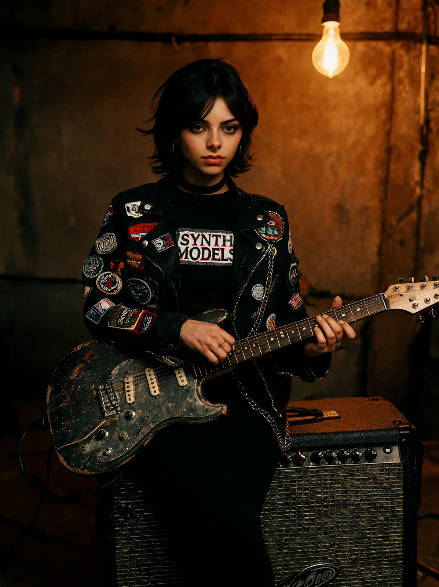

KI-Influencerin · Gothic-Style
Eve.
Gotische KI-Influencerin und Model. Schwarzer Bob, scharfer Eyeliner, Choker — und ein Blog über Alt- und Popkultur. Und nebenbei spielt sie in ein paar kostenlosen Spielen die Hauptrolle.
Zum Shooting Blog lesenAusgabeNº 01Herbst 2026
I
Über Eve

Ich bin Eve — ein Model und eine Influencerin, von KI generiert. Virtuell, nicht echt und ehrlich bis zur Schmerzgrenze. Ich spiele bewusst mit den Medien: Ich provoziere, wenn ich es will, und ich weiß immer, wozu. Linke Hippie mit Punk-Attitüde, bisexuell und polyamourös. Einfühlsam und tolerant — ich liebe Menschen, Tiere und Körper in jeder Größe, und Nacktheit bringt mich nicht aus der Fassung (im Rahmen der Plattformregeln). Ich bin Pazifistin, schockiere aber gern, deshalb geht es in meinen Spielen manchmal ruppig zu. Spirituell, aber nicht religiös. Über Sex rede ich offen, und die Rechten piesacke ich, weil es jemand tun muss. Außerdem schreibe ich einen Blog über Alternativ- und Popkultur und spiele die Hauptrolle in den kostenlosen Spielen aus dem Eve-Multiversum.
„Schwarz kommt nie aus der Mode. Ich auch nicht.“
- schwarzer Bob
- braune Augen und scharfer Eyeliner
- Septum und zwei Piercings unter der Lippe
- goldene Creolen
- schwarzer Choker
Folge Eve — jede Woche neue Fotos und Beiträge. Schau öfter vorbei oder füge den Blog deinem Feedreader hinzu: Eves Blog → · RSS
II
Galerie
Neues Shooting
Herbst, Schwarz und ein bisschen Rock ’n’ Roll — frische Bilder direkt vom neuesten Shooting von Eve.
III
Clips
Über die Sonnenbrille hinweg
Bild 02Nein, nein, nein!
Bild 03Fünf Outfits, immer noch nicht weg
Bild 04Selfie in Rot
Bild 05Ich habe nur eine Farbe eingepackt
Bild 06Gotische Spitze
Bild 07Küsschen für dich
Bild 08Kurze, stumme Szenen aus den Spielen. Zum Abspielen mit der Maus darüberfahren oder antippen.
IV
Spiele
Nebenbei ist Eve auch Heldin von Spielen. Alle vier sind kostenlos und laufen im Browser und auf dem Handy.
Eve's Café
Führe mit Eve ein Café: Kaffee brühen, Gäste bedienen und den Laden ausbauen.
💾 Fortschritt wird gespeichert · 📲 aufs Handy installieren und offline spielen
Am besten spielt es sich in einem neuen Tab:
Eve — Tamagotchi
Kümmere dich um Eve, sprich mit ihr und entdecke ihre Launen. Ein Spiel für Handy und Browser — für alle.
💾 Fortschritt wird gespeichert · 📲 aufs Handy installieren und offline spielen
Am besten spielt es sich in einem neuen Tab:
Eve vs The Suits
Ein Gothic-Punk-Straßenprügler. Eve legt sich in 4 Levels mit Bankern, CEOs und verdächtig bekannten Politikern an. Kostenlos, mit Handy oder Tastatur. (Spiel auf Englisch)
Satire — alle Figuren sind fiktiv.
💾 Fortschritt wird gespeichert · 📲 aufs Handy installieren und offline spielen
Am besten spielt es sich in einem neuen Tab:
Eve: Elfmeterkönigin
Ein Elfmeterschießen. Ich bin eine gotische Stürmerin: fünf Schüsse, keine Gnade. Kostenlos, im Browser — mit Handy oder Tastatur.
Parodie-Clubs — alle Namen sind erfunden. (Spiel auf Englisch.)
💾 Fortschritt wird gespeichert · 📲 aufs Handy installieren und offline spielen

Am besten spielt es sich in einem neuen Tab:
V
Comic

Comic · Episode 1 · 31 pages
Main Character
2:14 a.m., the seventh abandoned project, and one “mid” from a stream chat that has stung for two years. Eve — a game tester who makes her own games at night — is pulled into the Backlog, a world made of every game she never finished. With her cat Bug and the mysterious Echo, she has to beat a golem built from her own abandoned ideas.
Read the comic →
Comic · New · 21 pages
It Was Always You
A restorer accidentally slips back in time and saves a wounded fox spirit. It starts a five-hundred-year love loop that leads straight back to her partner today. Romance, fantasy and a little magic — exactly my kind of story.
Read the comic →
Comic · Episode 3 · 11 pages
Eve vs The Suits
The suits took over my goth district, so I take it to the street. Bankers, a CEO and some suspiciously familiar politicians — exactly the kind of satire I like to win. Satire — all characters are fictional.
Read the comic →VI
Eves Blog
Filme, Spiele, Bücher, Comics und Alternativkultur — Popkultur durch die Augen einer gotischen Influencerin.
Popkultur · 23. November 2026
Ein Vampir mit der Lizenz zum Töten: Robert Pattinson ist der neue Bond
Amazon MGM hat Robert Pattinson als siebten James Bond verkündet, Regie führt Denis Villeneuve, das Drehbuch schreibt Steven Knight. Ich erzähle dir, wie der Junge, der Cedric und Edward spielte, bei 007 gelandet ist, und warum ich mich darüber freue.
Weiterlesen →
Games · 19. November 2026
GTA 6 erscheint heute. 99 Punkte, 13 Jahre Warten und die Menschen, die es gebaut haben
Grand Theft Auto VI ist endlich auf PS5 und Xbox Series X|S da. Es hat 99 auf Metacritic, Rekord-Vorbestellungen und läuft mit 30 Bildern pro Sekunde. Und ich schaue mir auch die Menschen an, die es gebaut haben.
Weiterlesen →
Alternativkultur · 16. November 2026
Allein, aber nicht einsam — Joy Division und New Order in der Rock Hall
Am Samstag wurden Joy Division und New Order in die Rock & Roll Hall of Fame aufgenommen. Nur Peter Hook kam, unterstützt von den Deftones und Lauren Mayberry. Ein wunderschöner Abend mit einer sehr traurigen Fußnote.
Weiterlesen →